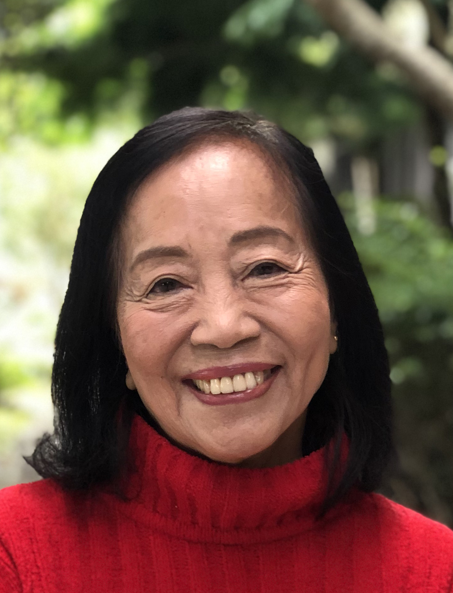

|
The Christopher N.H. Jenkins Cancer Control Award is an annual, endowed award to recognize an individual who has made significant accomplishments in community-oriented cancer prevention and control efforts targeting Asian Americans and Pacific Islanders. The Award will be presented annually at a meeting in the Fall in San Francisco, CA. Click here to learn more about Christopher N. H. Jenkins |
|---|
Christopher Jenkins Cancer Control Award Recipients:
 Community Organizer and Advocate
Community Health Educator and Researcher
Research Scientist
Cancer Prevention Institute of California
Professor of Medicine
School of Medicine, University of California, San Francisco
Associate Professor
Division of General Medicine,
University Of California, Davis
Chief of the Division of General Interal Medicine,
Virginia Commonwealth Univeristy
Professor of Surgery,
Director, Asian Liver Center,
Director, Liver Cancer Program,
Stanford University School of Medicine
Senior Fellow and Family Physician,
Asian Health Services, Oakland, California
Full Member in Cancer Prevention Research,
Fred Hutchinson Cancer Research Center Research Professor,
Dept. of Health Services, University of Washington
Assistant Deputy Director (retired),
Chronic Disease Prevention and Health Promotion In the Department of Public Health, California
Chief (retired),
Disparities Research Branch,
National Cancer Institute, Center to Reduce Cancer Health Disparities
Co-Founder/Past Chair,
Asian and Pacific Islander National Cancer Survivors Networks,
Past Chair, Intercultural Cancerl Council
Executive Director,
Orange County Asian and Pacific Islander Community Alliance
Professor, Department of Health Science,
Director of Center for Cancer Disparities Research,
California State University, Fullerton
District Health Officer,
Hawaii State Health Department
Project Director,
'Imi Hale,
'Imi Hale - Native Hawaiian Cancer Network,
-a program of Papa Ola Lokahi
Professor,
UCLA School of Public Health and Asian American Studies Department
Special Assistant to the Director,
Office of Minority Health,
US Department of Health & Human Services
Director of Asian Pacific Partners for Empowerment and Leadership (APPEAL)
Chief, Hepatitis Activity,
National Immunization Program,
CDC